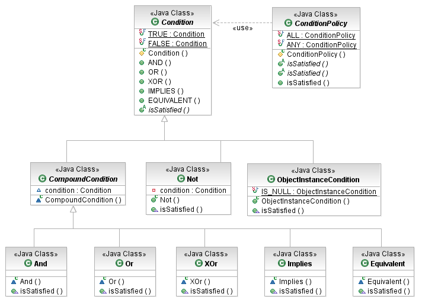
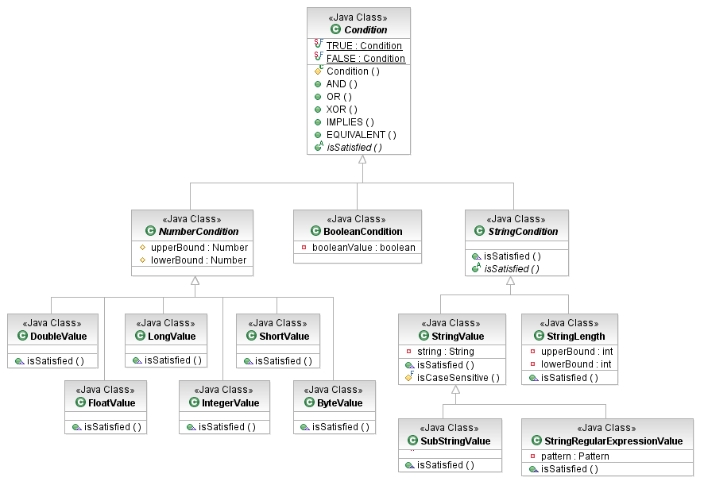

The EMF Model Query Framework provides a variety of convenient conditions that implement predicates on simple data values, including strings, numbers, and booleans. Because they work with types that are modeled in EMF using EDataTypes, these conditions are typically used as predicates on the EAttributes of model elements.

[as SVG]
The root of the condition hierarchy is, unsurprisingly, the Condition class. It defines the basic protocol of predicate evaluation, the boolean isSatisfied(Object) method. It also provides static factory methods for boolean operators, allowing multiple conditions to be combined in a string of code that vaguely resembles an expression:
Object subject = ... ; // a subject on which to test a complex condition
Condition a = ... ; // conditions obtained from somewhere
Condition b = ... ;
Condition c = ... ;
Condition complex = a.IMPLIES(b.OR(c));
System.out.println("Test: " + complex.isSatisfied(subject));
These boolean operators are implemented as private inner classes of the Condition class.
The ObjectInstanceCondition is different. As its name implies, it checks whether an object under test is a particular known instance, supplied to the condition upon construction. We show elsewhere how the shared IS_NULL instance of this condition class is the standard (and only) way to check whether the value of an EAttribute in a model element contains nulls.
The ConditionPolicy class implements a quantifier, either "exists" (ANY) or "for all" (ALL). A ConditionPolicy may be used to test a single condition against multiple subject:
Collection subjects = ... ; // some subjects on which to test a condition
Condition cond = ... ; // a condition obtained from somewhere
System.out.println("Test all: " + ConditionPolicy.ALL.isSatisfied(cond, subjects);
System.out.println("Test any: " + ConditionPolicy.ANY.isSatisfied(cond, subjects);
or multiple conditions against a single subject:
Object subject = ... ; // a subjects on which to test some conditions
Condition[] conditions = ... ; // some conditions obtained from somewhere
System.out.println("Test all: " + ConditionPolicy.ALL.isSatisfied(conditions, subject);
System.out.println("Test any: " + ConditionPolicy.ANY.isSatisfied(conditions, subject);
These condition objects may not be very exciting on their own, but they form the basis of every executable query.
The EMF Model Query framework includes, in the box, a variety of conditions on the commonly used Java boolean, numeric, and string primitive types. These conditions, by default, assume their inputs to be of the appropriate Java wrapper types. Optionally, they can be configured with value adapters that convert other data types to a value suitable for testing with these conditions.

[as SVG]
The BooleanCondition class defines a predicate on boolean values.
Object subject = Boolean.TRUE;
BooleanCondition cond = new BooleanCondition(true);
System.out.println("Test: " + cond.isSatisfied(subject));
The abstract NumberCondition class defines predicates on numeric values. The concrete *Value subclasses are inner classes handling each of Java's different numeric types. The condition is a range test: a numeric value that falls within the range is accepted. Exact matches are also supported, with convenience constructors taking a single value to specify the same upper and lower bound. Ranges are inclusive on both bounds.
Object subject = new Double(Math.E);
NumberCondition cond = new NumberCondition.DoubleValue(2.0, 3.0); // J2SE 5.0 auto-boxing
System.out.println("Test: " + cond.isSatisfied(subject));
The abstract StringCondition class defines predicates on string values. The concrete StringValue, SubStringValue, and StringRegularExpressionValue test string inputs for equality, substring containment, and regular expression pattern match, respectively. All support case-insensitive matching as an option; the default is case-sensitive.
The StringRegularExpressionValue looks for a pattern-match using Matcher.find(), not Matcher.matches(). Thus, in order to specify a regex that matches the entire string, it is necessary to use the beginning-of-input and end-of-input anchors: ^ and $.
The StringLength condition tests the length of a string, using the same range strategy as the NumberConditions.
Object subject = "CATGGTGCCAC";
StringCondition cond = new StringRegularExpressionValue("G+");
System.out.println("Test: " + cond.isSatisfied(subject));
Copyright (c) 2000, 2007 IBM Corporation and others. All Rights Reserved.